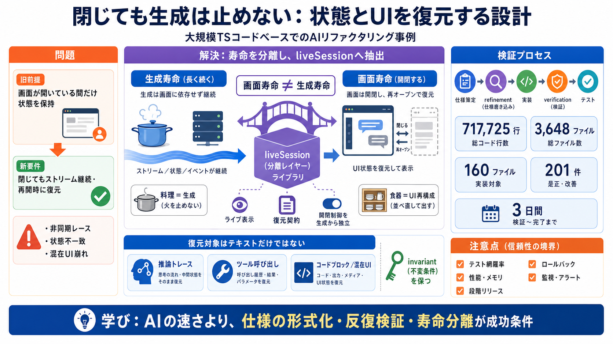

GPT-5.6 Sol vs Claude Fable 5 (Sol vs Fable) Compared
Claude Fable 5 is Anthropic's most capable public model for software engineering and pairs with Claude Code and Cowork f…

Claude Fable 5 is Anthropic's most capable public model for software engineering and pairs with Claude Code and Cowork f…
Sol performs extremely well when the work is measurable, tool-heavy, structured, and carried through an agent harness. F…
over long-running tasks with GPT-5 since getting access a few weeks ago. We ran an eval to solve 10 real Github issues s…
GPT-5.6 Sol is faster, better at structured output, and more reliable for high-throughput planning and code review tasks…
with Chrome that burned through 500 LinkedIn replies while I did literally nothing. [...] (28:02) Fable’s pedantry probl…